Each placeholder is a single self-contained HTML file using a specific programme branding style. The brief beside it is the complete specification to request the creation of one.
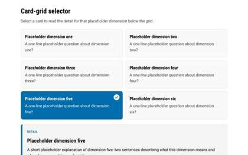
Six-card grid where selecting a card reveals its detail panel below; one selected at a time.
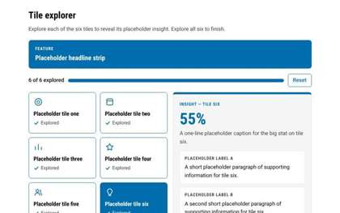
Six explore-all tiles with a progress bar and insight panel; exploring all six reveals a completion panel.
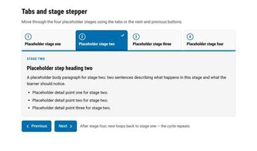
Four numbered stage tabs with Next/Previous stepping and a loop back to stage one.
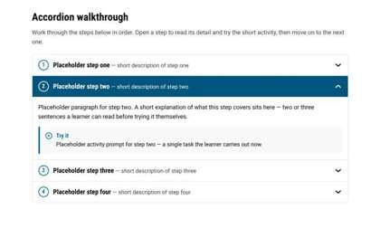
Four numbered accordion steps, one open at a time, each with a short paragraph and a Try it callout.
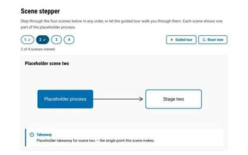
Four numbered scene chips with guided tour and reset, a diagram stage, and viewed-progress ticks.
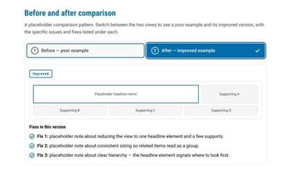
Segmented toggle switching between a cluttered poor-example mock with issue notes and its improved version with fix notes.
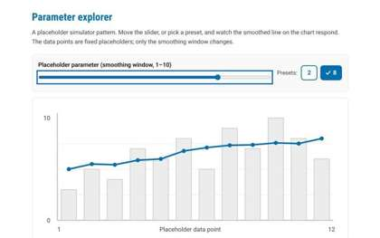
Range slider plus presets driving a hand-drawn SVG chart whose moving-average line redraws with the chosen smoothing window.
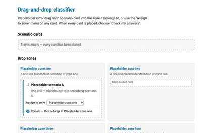
Sort four placeholder scenario cards into a 2x2 grid of labelled zones by drag-and-drop or a per-card assign select, then check answers for per-card tick/cross feedback.
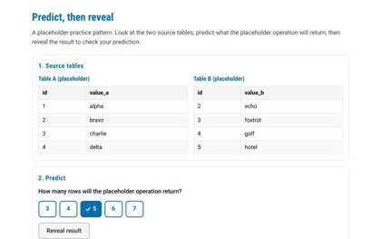
Two source tables, a committed numeric prediction via answer chips, then a revealed result table with matched/not-matched verdict and restart.
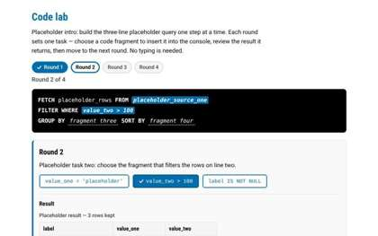
Build a three-line placeholder query across four selection-based rounds: pick a code fragment, see it land in a dark console, review a three-row result table, then advance to a completion strip.
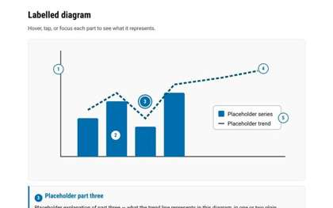
Five numbered hotspot markers on an abstract SVG chart, each revealing its part in a panel below.